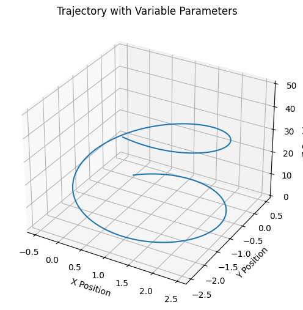
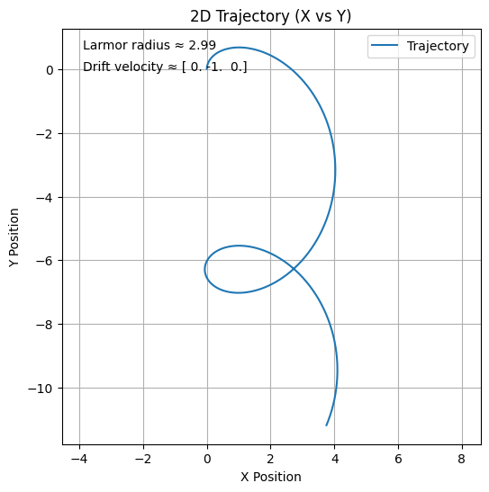
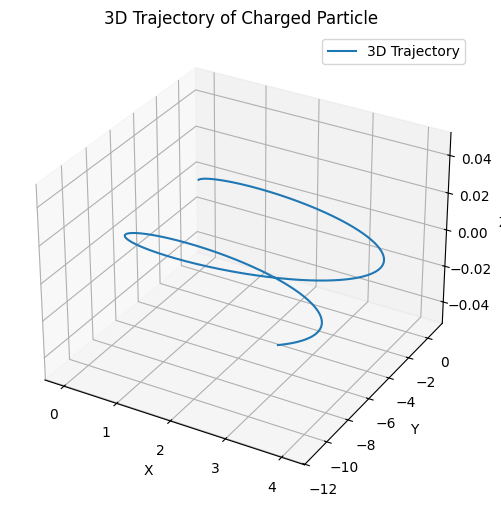

Problem 1
1. Applications of the Lorentz Force
Overview
The Lorentz force describes how charged particles move in electric and magnetic fields:
\[
\vec{F} = q\vec{E} + q\vec{v} \times \vec{B}
\]
It's essential in many physics and engineering systems.
Key Applications
Particle Accelerators
- Use electric fields to accelerate particles.
- Magnetic fields steer them in circular paths (e.g., cyclotrons, synchrotrons).
Mass Spectrometers
- Separate ions based on mass-to-charge ratio using magnetic deflection:
\[
r = \frac{mv}{qB}
\]
Plasma Confinement
- Magnetic fields control hot plasma in fusion reactors (e.g., tokamaks).
- Charged particles follow spiral paths due to Lorentz force.
E and B Field Roles
- \(\vec{E}\) field: changes particle speed.
- \(\vec{B}\) field: changes direction, not speed.
2.Simulating Particle Motion Under Lorentz Force
Overview
The Lorentz force governs the motion of charged particles:
\[
\vec{F} = q(\vec{E} + \vec{v} \times \vec{B})
\]
We simulate this using the Euler method, updating velocity and position step-by-step.
Python Simulation (Euler Method)
import numpy as np
import matplotlib.pyplot as plt
# Constants
q = 1.0 # Charge (C)
m = 1.0 # Mass (kg)
dt = 0.01 # Time step (s)
T = 50 # Total simulation time
steps = int(T / dt)
# Initial conditions
r = np.zeros((steps, 3)) # Position [x, y, z]
v = np.zeros((steps, 3)) # Velocity [vx, vy, vz]
r[0] = [0.0, 0.0, 0.0]
v[0] = [1.0, 1.0, 0.0]
# Choose fields here:
E = np.array([0.0, 0.0, 0.0]) # Electric field
B = np.array([0.0, 0.0, 1.0]) # Magnetic field (change for testing different cases)
# Euler integration
for i in range(steps - 1):
F = q * (E + np.cross(v[i], B))
a = F / m
v[i+1] = v[i] + a * dt
r[i+1] = r[i] + v[i] * dt
# Plot trajectory in 3D
fig = plt.figure(figsize=(8, 6))
ax = fig.add_subplot(111, projection='3d')
ax.plot(r[:, 0], r[:, 1], r[:, 2])
ax.set_xlabel('X')
ax.set_ylabel('Y')
ax.set_zlabel('Z')
ax.set_title('Trajectory of a Charged Particle')
plt.show()

3. Parameter Exploration
Goal
Explore how particle motion changes based on:
- Electric field (\(\vec{E}\))
- Magnetic field (\(\vec{B}\))
- Initial velocity (\(\vec{v}\))
- Particle charge (\(q\)) and mass (\(m\))
Updated Simulation Code
import numpy as np
import matplotlib.pyplot as plt
# Adjustable parameters
q = 1.0 # Charge (C)
m = 1.0 # Mass (kg)
E = np.array([0.0, 0.0, 1.0]) # Electric field (V/m)
B = np.array([0.0, 0.0, 1.0]) # Magnetic field (T)
v = np.array([1.0, 1.0, 0.0]) # Initial velocity (m/s)
r = np.array([0.0, 0.0, 0.0]) # Initial position (m)
# Time settings
dt = 0.01
steps = 1000
trajectory = np.zeros((steps, 3))
# Euler integration loop
for i in range(steps):
F = q * (E + np.cross(v, B))
a = F / m
v += a * dt
r += v * dt
trajectory[i] = r
# Plotting the trajectory
fig = plt.figure(figsize=(8, 6))
ax = fig.add_subplot(111, projection='3d')
ax.plot(trajectory[:, 0], trajectory[:, 1], trajectory[:, 2])
ax.set_title("Trajectory with Variable Parameters")
ax.set_xlabel("X Position")
ax.set_ylabel("Y Position")
ax.set_zlabel("Z Position")
plt.show()

4. Visualization of Particle Motion
Goal
Visualize the trajectory of a charged particle under various electromagnetic field setups, and highlight key physical features such as:
- Larmor radius (radius of circular motion in magnetic field)
- Drift velocity (in crossed electric and magnetic fields)
Python Code with 2D and 3D Plots
import numpy as np
import matplotlib.pyplot as plt
# Parameters (you can modify for each case)
q = 1.0
m = 1.0
E = np.array([1.0, 0.0, 0.0]) # Electric field
B = np.array([0.0, 0.0, 1.0]) # Magnetic field
v = np.array([0.0, 1.0, 0.0]) # Initial velocity
r = np.array([0.0, 0.0, 0.0]) # Initial position
# Time settings
dt = 0.01
steps = 1000
trajectory = np.zeros((steps, 3))
# Euler loop
for i in range(steps):
F = q * (E + np.cross(v, B))
a = F / m
v += a * dt
r += v * dt
trajectory[i] = r
# Calculate Larmor radius: r_L = mv_perp / (qB)
v_perp = np.linalg.norm(np.cross(v, B) / np.linalg.norm(B)) if np.linalg.norm(B) != 0 else 0
r_L = (m * v_perp) / (q * np.linalg.norm(B)) if np.linalg.norm(B) != 0 else 0
# Drift velocity (E × B) / B²
if np.linalg.norm(B) != 0:
v_drift = np.cross(E, B) / np.linalg.norm(B)**2
else:
v_drift = np.zeros(3)
# --- 2D Plot (X vs Y) ---
plt.figure(figsize=(6, 6))
plt.plot(trajectory[:, 0], trajectory[:, 1], label='Trajectory')
plt.title("2D Trajectory (X vs Y)")
plt.xlabel("X Position")
plt.ylabel("Y Position")
plt.grid(True)
plt.axis("equal")
plt.legend()
plt.annotate(f"Larmor radius ≈ {r_L:.2f}", xy=(0.05, 0.95), xycoords='axes fraction', fontsize=10)
plt.annotate(f"Drift velocity ≈ {v_drift}", xy=(0.05, 0.90), xycoords='axes fraction', fontsize=10)
plt.show()
# --- 3D Plot ---
from mpl_toolkits.mplot3d import Axes3D
fig = plt.figure(figsize=(8, 6))
ax = fig.add_subplot(111, projection='3d')
ax.plot(trajectory[:, 0], trajectory[:, 1], trajectory[:, 2], label='3D Trajectory')
ax.set_title("3D Trajectory of Charged Particle")
ax.set_xlabel("X")
ax.set_ylabel("Y")
ax.set_zlabel("Z")
ax.legend()
plt.show()
 